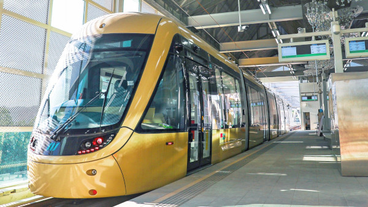
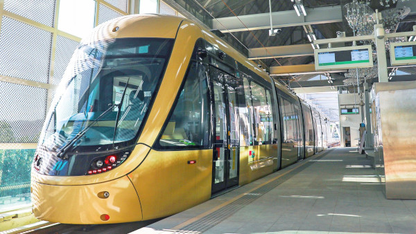

- 捷運介紹
- 捷運路線
- 捷運票價
- 時刻表
捷運介紹
新北捷運系統是台灣新北市發展的城市軌道交通網絡，旨在提升大台北地區的交通便捷性，紓解通勤壓力並促進區域經濟發展。自首條路線「淡海輕軌」於2018年通車以來，新北捷運持續擴展，包含環狀線、三鶯線、以及未來的安坑輕軌、五股泰山輕軌等多條規劃中與施工中的路線。系統設計不僅強調與台北捷運的無縫接軌，更融入新北的各地特色，提升了旅客搭乘的便利性與舒適性，成為通勤族和旅遊客的重要交通選擇。
新北捷運系統是台灣新北市發展的城市軌道交通網絡，旨在提升大台北地區的交通便捷性，紓解通勤壓力並促進區域經濟發展。自首條路線「淡海輕軌」於2018年通車以來，新北捷運持續擴展，包含環狀線、三鶯線、以及未來的安坑輕軌、五股泰山輕軌等多條規劃中與施工中的路線。系統設計不僅強調與台北捷運的無縫接軌，更融入新北的各地特色，提升了旅客搭乘的便利性與舒適性，成為通勤族和旅遊客的重要交通選擇。
